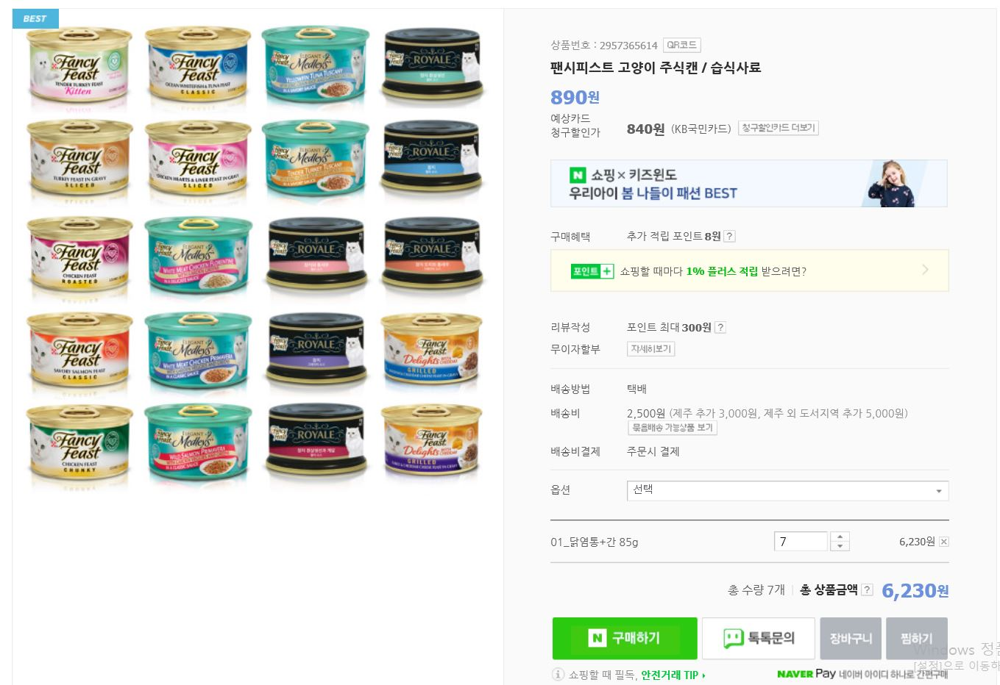
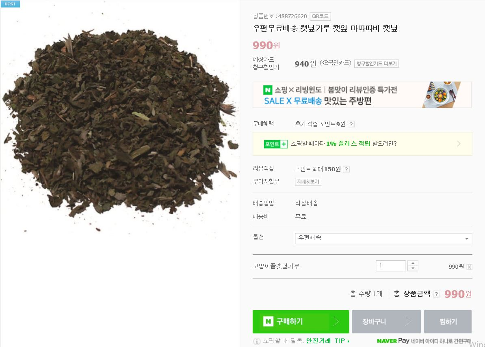
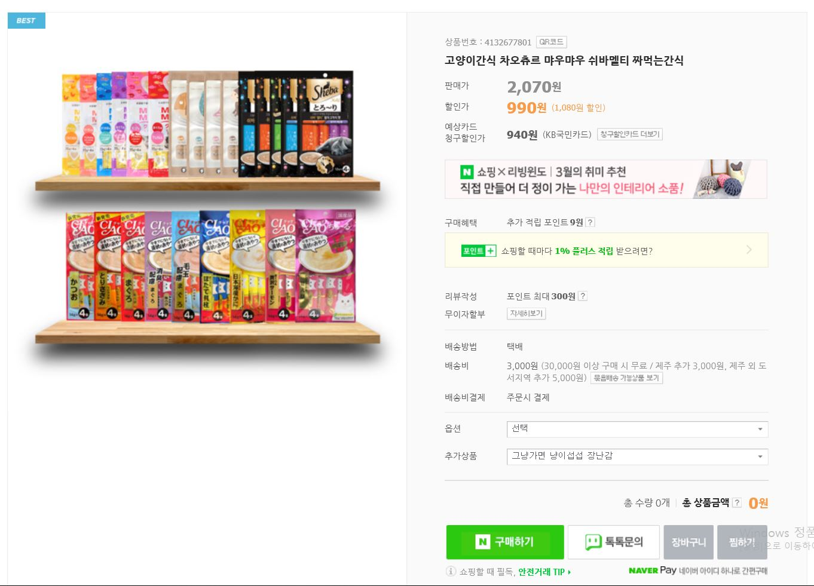
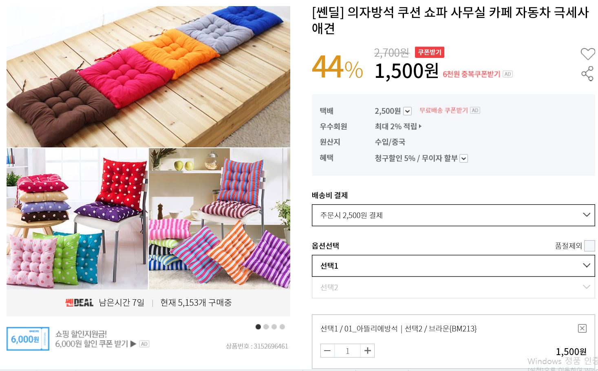
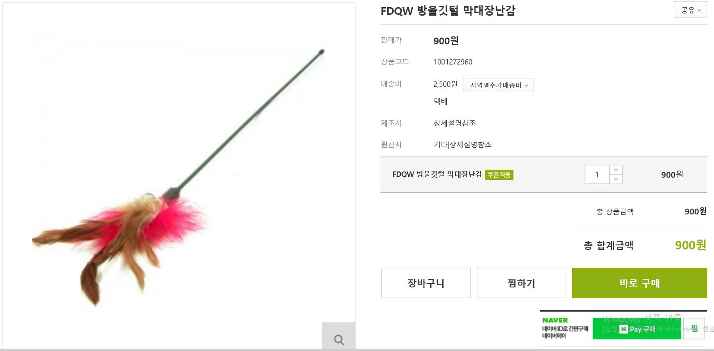
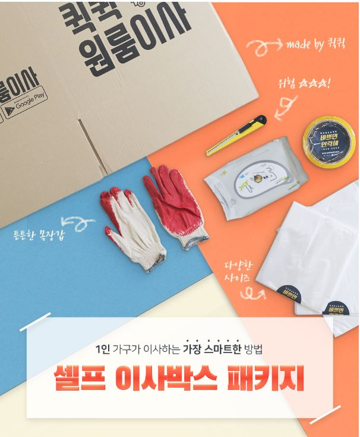

아이템 스펙
주식캔 7회분 / 6230원
길고양이는 집고양이보다 먹는 것에 대한 욕구가 크다.
때문에 일주일 동안 꾸준히 한 캔씩 먹이를 주면서 친분을 쌓는다.
캣잎,마따따비 / 990원
관계란 기분 좋을 때 더 진전되기 마련인 법.
고양이 마약으로 고양이의 기분을 더 업 시켜보자
간식 / 990원
길고양이들은 먹을 것이 최고지만 더 맛있는 먹을 것은 더 최고다.
나와 친해지면 이렇게 맛있는걸 먹을 수 있다는 걸 인식 시켜라.
쿠션 / 1500원
택배상자에 입구를 만들어 쿠션 하나만 넣어도 고양이 집 완성.
고양이 존안에 집을 두어 근처에서 꾸준히 낚시를 해라
장난감 / 900원
고양이가 더이상 피하지 않고 애교를 부리는 수준이 되면
장난감으로 놀아줘서 이제 내가 로드 집사라고 못을 박아라.
Total / 10610원
상세페이지 분석
네이버 쇼핑 "고양이 풀 "
항목
배송기간, 상품정보, 필독사항, 우편공지, 캣잎 특징
캣잎을 언제 사용하는지, 캣잎에 대한 체크사항, 배송안내
서비스 사항, 같은 매장에서 파는 다른 용품
상품/거래조건 정보, 반품/교환 정보, 판매자 정보, 주의사항
분석
캣잎과 고양이 그림이 많고 주의사항이나 배송사항
같은 중요한 정보는 보색으로 잘보이게 하거나
볼드 서체를 빵빵 넣으심. 딱히 정리가 잘 되어 보이진 않음.
WIAPET 팬시피스트 주식캔
항목
배송기간, 상품정보, 등급혜택, 쿠폰, 상품 종류, 성분, 상세정보
분석
html로 만든 상세페이지가 아닌 듯. 맛 별로 상품 색에 맞춰
성분이나 원료를 표기해둠. 뭔가 대단한 제품인듯 써놓았는데
걍 캔 사료임. 배송 사항은 맨아래 있어서 어떻게
디자인해도 젤 늦게 보이고 못 보는 사람도 있을 듯.
인터파크 의자방석
항목
상담정보, 상품옵션, 상품별 디테일옵션, 배송안내, 교환/반품, 유의사항
분석
옵션을 제일 상단에 두고 그다음 상품별 디테일 옵션해서 순서를 잘 짜놓음
하지만 옵션 더럽게 많아서 스크롤 좍좍 내려야 함. 옵션이 많다보니
상품 사진도 많이 있다. 상세정보를 잘 알려주는 듯.
포히 막대장난감
항목
반품/교환 사항, 업무시간, 상품설명, 사이즈
분석
아주 심플하심..상품사진도 썸네일 딱 하나임. 가 그대로 보이는 걸
보면 전문적인 웹디자이너 분이 하신건 아닌듯. 별 참고는 안됨.
강아지 왕국 고양이 천국 고양이간식
항목
배송기간, 상품정보, 귀여운 고양이 짤(핡), 옵션, 디테일 옵션
성분, 추가 상품, 유통기한, 배송안내, 교환 반품 안내
분석
옵션 설명이 불친절하심. 고양이 움짤을 넣은 건 정말 좋은 선택.
글을 html로 대부분 넣으신 것 같은데 걍 좔좔 있는 느낌이라 잘 안읽힘
결론
다 적절한 디자인은 아닌듯 하고 고양이 사진은 꼭 넣어야겠다!
순서에 대한 팁은 잘 얻어 갔다!
유사 상품 상세페이지 분석
셀프 이사 박스패키지
항목
패키지 소개, 이점, 디테일, 문의 안내
분석
배송에 대한 안내가 없다는 점 빼고 괜찮은 상세페이지라고 느꼈다.
제품 구성이나 신경썼던 부분을 잘 보여준 것 같고 보여줄
것만 보여줬다는 느낌이 드는게 되게 스크롤이 짧은데 그에 반해
정보가 부족하다는 생각이 들지 않았다.
차별점 및 구매포인트
박스까지 활용가능!
집에 큰 애물단지가 될 박스를 이용해 고양이 집을 만들 수 있다.
고양이 용품세트가 시중에 없다!
길고양이 뿐만 아니라 집고양이를 처음 키우는 사람들도 살만한
고양이 용품세트
휴대성!
언제 어디서나 고양이를 만나기 위해서는 사료를 항상 들고
다녀야한다. 모두 휴대성이 좋은 물품으로 구성되어 있지롱~
제작 기획안
택배 및 배송안내
길고양이가 애교부리는 모습 bb
구성품
구성품 디테일과 옵션(유의사항 포함)
이 아이템을 사야하는 이유
문의 사항안내